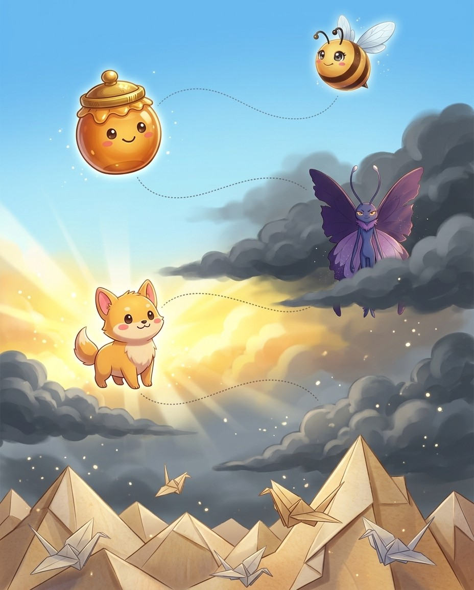
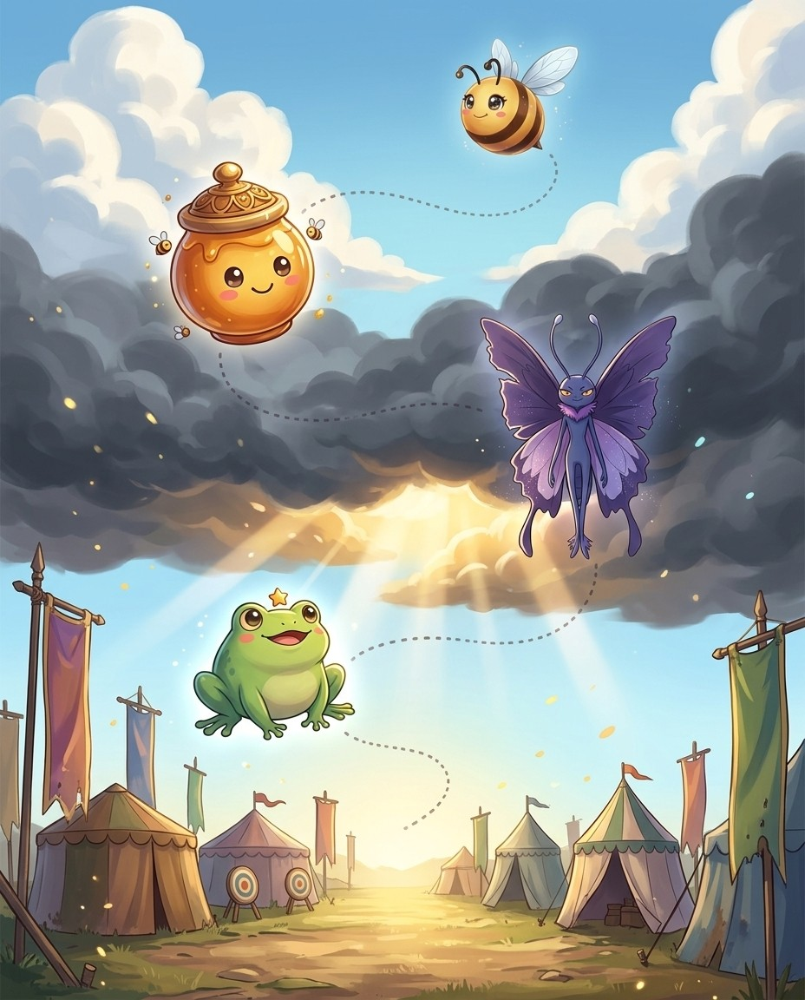

BizzyEvery champion spells the exact same way. First you say the word. Then you spell it, letter by letter. Then you say…
UH-OH!
Honeypot · Vex is circlingWhy say it first? Because you can't spell a word you heard wrong! Saying it back checks your ears. If the judge…
REMEMBER
GOT IT!
WishUse the routine on every practice word, even the easy ones. When say, spell, say becomes a habit, your brain saves all…
PegasusNow spell it at a steady drumbeat. R. E. M. E. M. B. E. R. Never rush. The steady beat keeps your…
REMEMBER
🔊 narrated in the appturn the page — the whole trick, explained →
Bizzing Bee · Lift-Off!4
Chapter 1 · The Champion's Routine — say, spell, sayThe idea · ★☆☆
The big idea
Every champion spells the same way: SAY the word, SPELL it letter by letter, then SAY it again. Saying it first proves your ears heard right; saying it after proves your letters match the sound.
The pro move
REMEMBER
Say it. rih-MEM-ber
Spell it. R · E · M · E · M · B · E · R
Say it again. rih-MEM-ber
Syllables. re · mem · ber
Sounds → Letters. [rih=RE] [MEM=MEM] [ber=BER]
Exception. none — every sound is spelled just as you hear it
Origin. Latin
Root. Latin re- = again + memor = mindful
The Core
Champions never blurt letters. The routine is always the same three beats: SAY the word out loud, SPELL it at a steady pace, SAY it again. Say–spell–say. It works for a 4-letter word and a 14-letter word.
Why say it first?
You cannot spell a word you heard wrong. Saying it back checks your ears: if the judge says 'remember' and you say 'remender', you just caught a mistake before it cost you. Your mouth is your first spell-checker.
Spell it steady
Letters come out at a drumbeat — R…E…M…E…M…B…E…R — never in a rush. A steady beat keeps your place in the word, and at a real bee it lets the judges hear every letter clearly.
Why say it again?
The final say seals the word. You just heard yourself spell it; saying the whole word confirms the letters you gave add up to the word you meant. If it feels wrong in your mouth, something was off.
Vex alert
CHAMP + ION — a CHAMP never skips the routine.
Check yourself
Cover the page. Spell these three out loud: remember · practice · together. Say each letter like you mean it.
💬
Bee Break · someone said it better
“Honesty is a fine jewel, but much out of fashion.”
BizzyHere's a secret: a letter's name and a letter's sound are different things. The letter B is named bee — but it…
UH-OH!
Honeypot · Vex is circlingThe letter C is a copycat with two voices. Before a, o, or u, it's hard and says kuh — cat, coat,…
CIRCUS
GOT IT!
Pond StarTwo more characters to meet. Q never works alone — it always brings its best friend u, and together they say kwuh:…
HoppyG plays the same game. Hard g before a, o, u — goat, game, gum. Soft g before e, i, y says…
GIANT
🔊 narrated in the appturn the page — the whole trick, explained →
Bizzing Bee · Lift-Off!10
Chapter 2 · Alphabet Sounds — cat, city, goat, giantThe idea · ★☆☆
The big idea
Letters are not their names: B says /b/, not 'bee'. Most letters keep one sound, but c and g each have two — hard before a, o, u and soft before e, i, y. Know what each letter SAYS and you can catch its sound in any word.
The pro move
CIRCUS
Say it. SUR-kus
Spell it. C · I · R · C · U · S
Say it again. SUR-kus
Syllables. cir · cus
Sounds → Letters. [sur=CIR] [kus=CUS]
Exception. one word, both c sounds — soft c before i (cir = /s/), hard c before u (cus = /k/)
Origin. Latin
Root. Latin circus = ring, circle
The Core
A letter's name and a letter's sound are different things. The letter B is named 'bee' but it says /b/, as in bat. When you spell by sound, always think about what the letter SAYS, never what it is called.
Two faces of c
C is a copycat with two voices. Before a, o, u it is HARD and says /k/: cat, coat, cup. Before e, i, y it is SOFT and says /s/: city, cent, cycle. The next letter decides — look one letter ahead.
Two faces of g
G plays the same game. Hard g before a, o, u: goat, game, gum. Soft g before e, i, y: giant, gentle, gym — it says /j/. (English keeps a few rebels like 'give' and 'girl', so listen first.)
The team players
Q never works alone — it always brings u, and qu says /kw/: queen, quick, quiet. X is two sounds in one letter: /ks/, as in fox and exact. Spot them and you will never write 'qeen' or 'foks'.
Vex alert
Soft g before e — GEN, not JEN.
Check yourself
Cover the page. Spell these three out loud: circus · city · cycle. Say each letter like you mean it.
BizzyA, e, i, o, u — every vowel has two voices. The short voice is quick: cap, pet, sit, hop, cub. The…
UH-OH!
Honeypot · Vex is circlingOne more player: Y the substitute. When a, e, i, o, u are missing, y does a vowel's job — gym has…
GOT IT!
RustyNow watch the magic. Cap — add a silent e — cape! Kit becomes kite. Hop becomes hope. The e says nothing…
MISTAKE
MidnightWhen a consonant closes in the vowel and there's no magic e, the vowel stays short: cat, bed, fish, pond, drum. One…
BASKET
🔊 narrated in the appturn the page — the whole trick, explained →
Bizzing Bee · Lift-Off!16
Chapter 3 · Vowels & Magic E — cap, capeThe idea · ★☆☆
The big idea
A, e, i, o, u each have a short voice (cap, pet, sit, hop, cub) and a long voice that says the letter's own name (cape, Pete, kite, hope, cube). A silent e at the end is the magic switch that turns the short voice long.
The pro move
MISTAKE
Say it. mih-STAYK
Spell it. M · I · S · T · A · K · E
Say it again. mih-STAYK
Syllables. mis · take
Sounds → Letters. [mih=MI] [STAYK=STAKE]
Exception. the final e is silent — its whole job is making the a say its name: tak → TAKE
Origin. Old Norse
Root. mis- = wrongly + taka = to take
The Core
Every vowel has two voices. The SHORT voice is quick: a as in cap, e as in pet, i as in sit, o as in hop, u as in cub. The LONG voice simply says the letter's name: cape, Pete, kite, hope, cube.
The magic e
Add a silent e to the end and the vowel before it goes long: cap→cape, kit→kite, hop→hope, cub→cube, plan→plane. The e itself says nothing — it reaches back over one consonant and flips the switch.
Closed = short
When a consonant closes in a vowel with no magic e, the vowel stays short: cat, bed, fish, pond, drum. One vowel, shut in by consonants — expect the short sound. This is the most common syllable in English.
Open = long
When a syllable ENDS on its vowel, the vowel is free to say its name: go, me, hi, ba·by, mu·sic, pa·per. Spot where the syllable ends and you can predict the vowel sound before you spell it.
Vex alert
Magic e turns TAK into TAKE — the a says its name.
Check yourself
Cover the page. Spell these three out loud: mistake · escape · invite. Say each letter like you mean it.
BizzySay remember and clap along: re — mem — ber. Three claps! Each clap is a syllable, one beat of the word.…
REMEMBER
UH-OH!
Honeypot · Vex is circlingOne golden check: every syllable must have a vowel sound — so every syllable you write needs at least one vowel letter.…
GOT IT!
EchoThree ways to count beats. Clap them. Hum the word — every bump in the hum is a beat. Or rest your…
SwanWhen two of the same consonant sit in the middle of a word, the syllables split right between them. Rab-bit. Sum-mer. Les-son.…
RABBIT
🔊 narrated in the appturn the page — the whole trick, explained →
Bizzing Bee · Lift-Off!22
Chapter 4 · Syllables — re, mem, berThe idea · ★☆☆
The big idea
A syllable is one beat of a word, and every beat has exactly one vowel sound. Long words are just short words holding hands: re·mem·ber is three easy pieces, not one scary one. Break the word into beats and spell one beat at a time.
The pro move
FANTASTIC
Say it. fan-TAS-tik
Spell it. F · A · N · T · A · S · T · I · C
Say it again. fan-TAS-tik
Syllables. fan · tas · tic
Sounds → Letters. [fan=FAN] [TAS=TAS] [tik=TIC]
Exception. the /k/ at the end is spelled C, the usual ending after a short vowel in longer words
Origin. Greek
Root. Greek phantastikos = able to imagine
The Core
Say 'remember' and clap: re–mem–ber. Three claps, three syllables, three small spelling jobs. A syllable is one push of your voice, and each push carries exactly one vowel sound.
Find the beats
Three easy ways to count beats: clap them, hum the word (each hum-bump is a beat), or rest your hand under your chin — your jaw drops once per syllable. Try 'umbrella': um–brel–la. Three drops.
Twin consonants split
When two of the same consonant sit in the middle, the syllables split between them: rab·bit, sum·mer, les·son. That's why the word keeps both letters — each syllable owns one. Hear rab + bit, write both b's.
Spell beat by beat
Never spell a long word in one gulp. Say the first syllable, spell it. Say the next, spell it. cal·en·dar = CAL + EN + DAR. Each piece is kid-sized, and the word spells itself.
Vex alert
cal + en + dar — the last beat is DAR with an a, not der.
Sound trap
summer sounds like sommer — at the mic, always ask for the meaning.
Check yourself
Cover the page. Spell these three out loud: fantastic · rabbit · summer. Say each letter like you mean it.
Bizzing Bee · Lift-Off!23
Chapter 4 · Syllables — re, mem, berPractice · ★☆☆
Say it. Spell it out loud. Write it.
🔊 every word has real audio in the app
fantastic
/ fan-TAS-tik / · /fænˈtæstɪk/
wonderful; extremely good
hook: Three beats: fan + tas + tic — spell them one at a time.
Spelling all ten words right feels ▁▁▁.
rabbit
/ RAB-it / · /ˈræbɪt/
a small animal with long ears that hops
hook: Twin b’s split the beats: rab + bit — each syllable keeps one b.
A ▁▁▁ hopped across the garden path.
summer
/ SUM-er / · /ˈsʌmər/
the warmest season of the year
hook: sum + mer — the twin m’s mark where the beats split.
They practice spelling on the porch every ▁▁▁ evening.
basket
/ BAS-kit / · /ˈbæskɪt/
a container woven from strips, with a handle
hook: bas + ket — two closed beats, both vowels short.
She carried the word cards in a little ▁▁▁.
monster
/ MON-ster / · /ˈmɑnstər/
a large frightening imaginary creature
hook: mon + ster — two beats tame the monster.
Long words look like ▁▁▁ until you break them into beats.
umbrella
/ um-BREL-uh / · /əmˈbrɛlə/
a folding cover that keeps rain off you
hook: um + brel + la — three beats, twin l’s at the split.
BizzyInside every syllable live single sounds. Stretch the word stamp, slowly, like a rubber band: sss — t — aaa — mmm…
STAMP
UH-OH!
Honeypot · Vex is circlingWatch out for the quiet sounds that hide at normal speed — the n in plant, the m in stamp. Say it…
PLANT
GOT IT!
PegasusBefore you write, count the sounds on your fingers. Trust: t — r — u — s — t. Five fingers! If…
SnowfoxSounds come out of your mouth in a line, and the letters follow the same line. D — r — i —…
DRIFT
🔊 narrated in the appturn the page — the whole trick, explained →
Bizzing Bee · Lift-Off!28
Chapter 5 · Sounds to Letters — stretch, spellThe idea · ★☆☆
The big idea
Inside each syllable live single sounds. Stretch the syllable like a rubber band — /s/…/t/…/a/…/m/…/p/ — and write each sound in the order you hear it. Nothing skipped, nothing guessed: that is spelling by sound.
The pro move
SPLASH
Say it. SPLASH
Spell it. S · P · L · A · S · H
Say it again. SPLASH
Syllables. splash (one beat)
Sounds → Letters. [s=S] [p=P] [l=L] [a=A] [sh=SH]
Exception. the last sound /sh/ needs two letters working as one team
Origin. English
Root. imitative — the word sounds like the thing it means
The Core
Take one syllable and stretch it slowly: 'stamp' becomes sss–t–aaa–mmm–p. Five sounds. Now write them in order: S, T, A, M, P. Every sound gets a letter; every letter earns its place.
Stretch like a band
Say the word in slow motion, as if your voice were a rubber band being pulled. Sounds you rush past at normal speed — the n in 'plant', the r in 'crisp' — pop out clearly when stretched. What you can hear, you can spell.
Count first, then write
Before writing, count the sounds on your fingers: /t/ /r/ /u/ /s/ /t/ — five. If your spelling has fewer letters than sounds, you dropped one. 'Trust' with four letters is missing something.
The order is the spelling
Sounds come out in a line, and letters follow the same line. If you hear /d/ /r/ /i/ /f/ /t/, you write d-r-i-f-t. Swapping the order — 'dirft' — is the #1 slip, so touch a finger per sound as you write.
Vex alert
s-t-a-m-p — do not lose the quiet m before p.
Sound trap
trust sounds like trussed — at the mic, always ask for the meaning.
Check yourself
Cover the page. Spell these three out loud: splash · stamp · blend. Say each letter like you mean it.
Chapter 6 · Letter Teams — sh, ch, th, phStory · ★☆☆
6
Spelling Bee Basics
Letter Teams — sh, ch, th, ph
📍 the Paper Mountains

BizzyStretch the word shark: sh — ar — k. That first sound is one sound — but no single letter can say…
UH-OH!
Honeypot · Vex is circlingHere's a fun trap: T H makes two different sounds. It whispers in thin, thumb, and math. It buzzes in this, that,…
GOT IT!
HoppyThe big four teams: S H as in shine and brush. C H as in chest and lunch. T H as in…
WHISPER
UH-OH!
Honeypot · Vex is circlingC H loves costumes. Usually it says ch, like chest. But in Greek words it says kuh — chorus, echo, school! And…
CHORUS
🔊 narrated in the appturn the page — the whole trick, explained →
Bizzing Bee · Lift-Off!34
Chapter 6 · Letter Teams — sh, ch, th, phThe idea · ★☆☆
The big idea
Some sounds are spelled by two letters working as one team: sh in shark, ch in chest, th in thumb, wh in whale, ph in phone, ck in duck, ng in ring. One sound, two letters — spot the team and spell it as a unit.
The pro move
WHISPER
Say it. WIS-per
Spell it. W · H · I · S · P · E · R
Say it again. WIS-per
Syllables. whis · per
Sounds → Letters. [wis=WHIS] [per=PER]
Exception. the opening /w/ is the team WH — many question-and-wind words start with wh: what, when, whisper, whale
Origin. Old English
Root. Old English hwisprian = to murmur
The Core
Stretch 'shark': /sh/–/ar/–/k/. That first sound is ONE sound, but no single letter says it — S and H team up. English is full of these letter teams; treat each team as a single spelling piece.
The big four
SH as in shine and brush. CH as in chest and lunch. TH as in thumb and bath. WH as in whale and whisper. When you hear these sounds, your pencil writes two letters but your mind counts one.
Two kinds of th
TH whispers in thin, thumb, math — and buzzes in this, that, brother. Put your fingers on your throat: the buzzing kind vibrates. Both are spelled the same way — T-H — so this trap costs nothing once you know it.
ch wears costumes
CH usually says /ch/ (chest, lunch), but in Greek words it says /k/ — chorus, echo, school — and in French words it says /sh/ — chef, machine. If /k/ or /sh/ shows up in a fancy word, suspect CH and ask about the origin.
Vex alert
Short o, so the /k/ ending is the CK team — never just k.
Sound trap
whale sounds like wail, wale — at the mic, always ask for the meaning.
Check yourself
Cover the page. Spell these three out loud: whisper · shark · chest. Say each letter like you mean it.
Bizzing Bee · Lift-Off!35
Chapter 6 · Letter Teams — sh, ch, th, phPractice · ★☆☆
Say it. Spell it out loud. Write it.
🔊 every word has real audio in the app
whisper
/ WIS-per / · /ˈwɪspər/
to speak very softly and quietly
hook: WH team starts it — whisper, whale, what.
She ▁▁▁ the syllables to herself before spelling aloud.
shark
/ SHARK / · /ˈʃɑrk/
a large ocean fish with sharp teeth
hook: SH is one sound, one team — sh + ark.
A ▁▁▁ can grow new teeth its whole life.
chest
/ CHEST / · /ˈtʃɛst/
the front of your body between neck and stomach; a big box
hook: CH team + est — four sounds, five letters.
The pirate’s ▁▁▁ was full of gold coins.
thumb
/ THUM / · /ˈθʌm/
the short thick finger on the side of your hand
hook: TH team starts it, silent b ends it — thum(b).
He gave a ▁▁▁-up after spelling the word.
whale
/ WAYL / · /ˈweɪl/
a huge animal that lives in the sea and breathes air
hook: WH + ALE — magic e makes the a long.
A blue ▁▁▁’s heart is as big as a small car.
phone
/ FOHN / · /ˈfoʊn/
a device used to talk to people far away
hook: PH is the Greek /f/ team — phone, photo, graph.
The good news came by ▁▁▁ that evening.
the Paper Mountains
Bizzing Bee · Lift-Off!36
Chapter 6 · Letter Teams — sh, ch, th, phRapid round · ★☆☆
More ammo — one line each.
dolphin/DOL-fin/ a friendly sea animal that clicks and whistles
kitchen/KIH-chin/ the room where food is cooked
string/STRING/ a thin rope for tying things
clock/KLOK/ a machine that shows the time
Lock them in
Pick 4 words from above. Say each one as you write it — three times, no shortcuts. The third copy is the one your hand remembers.
the Paper Mountains
Bizzing Bee · Lift-Off!37
Chapter 6 · Letter Teams — sh, ch, th, phCheckpoint · ★☆☆
Swan · Champion of the Wildhearts runs the checkpoint
Do you own the idea?
Circle your answer, then check the back. No pressure — wrong answers are how the right ones stick. Swan's power is Blink Step — borrow it.
1. Which of these is the big idea of “Letter Teams — sh, ch, th, ph”?
AOld English/Latin un- = not (before adjectives) or reverse the action of (before verbs).
BSome sounds are spelled by two letters working as one team: sh in shark, ch in chest, th in thu…
CThe most common suffix in English — from Latin -tionem.
DLatin com- = with, together.
2. Which word belongs to this chapter's family?
Aunkempt
Bconnoisseur
Cwhisper
Deloquent
3. The card “The Core” says…
AStretch 'shark': /sh/–/ar/–/k/. That first sound is ONE sound, but no single letter says it — S…
BCH usually says /ch/ (chest, lunch), but in Greek words it says /k/ — chorus, echo, school — an…
CSH as in shine and brush. CH as in chest and lunch. TH as in thumb and bath. WH as in whale and…
DTH whispers in thin, thumb, math — and buzzes in this, that, brother. Put your fingers on your …
4. “WH team starts it — ▁▁▁, whale, what.” — which word is this hook about?
Awhisper
Bthumb
Cchest
Dshark
Dictation round
Hand this page to anyone nearby. They read the words from the answer key (Ch. 6 dictation, at the back) — you write, no peeking.
1.
2.
Bizzing Bee · Lift-Off!38
Chapter 6 · Letter Teams — sh, ch, th, phGame · ★☆☆
Midnight's puzzle page
Scramble & rescue
I own this
Unscramble
ncehikt
wlaeh
riephsw
opehn
pdlhoin
rkhas
Rescue the vowels
d_lph_n
wh_sp_r
k_tch_n
ch_st
sh_rk
th_mb
Bee Break · Pond Star's true fact
A frog drinks by soaking up water through its skin instead of using its mouth.
BizzyConsonants aren't the only ones with teams — vowels team up too! Hear the long a in paint? There's no magic e…
PAINT
UH-OH!
Honeypot · Vex is circlingThree twisty sounds, three team pairs. The annoyed sound: oi inside, like coin — oy at the end, like boy. The ouch…
GOT IT!
MidnightNow the coolest rule in this chapter. Teams that end in y or w love the end of a word: play, boy,…
Pond StarE E and E A both say long e — sweet and green, but also eat and reason. No rule picks between…
REASON
🔊 narrated in the appturn the page — the whole trick, explained →
Bizzing Bee · Lift-Off!40
Chapter 7 · Vowel Teams — ai, ay, ee, oaThe idea · ★☆☆
The big idea
Long vowel sounds are usually spelled by two vowels teaming up: ai/ay for long a, ee/ea for long e, oa/ow for long o, oi/oy and au/aw for the twisty sounds. Position picks the team: ay, oy, ow like the END of words; ai, oi, oa work INSIDE.
The pro move
RAINBOW
Say it. RAYN-boh
Spell it. R · A · I · N · B · O · W
Say it again. RAYN-boh
Syllables. rain · bow
Sounds → Letters. [RAYN=RAIN] [boh=BOW]
Exception. two vowel teams in one word — AI works inside its syllable, OW takes the end position
Origin. Old English
Root. regn = rain + boga = bow, arch
The Core
Hear the long a in 'paint'? No magic e in sight — instead two vowels team up: AI. Vowel teams are the second great way English spells long vowels, and each team has a favorite seat in the word.
The position rule
Teams ending in Y or W love the END of a word: play, stay, boy, enjoy, snow, grow. Their twins work INSIDE: paint, rain, coin, point, coat, road. Same sound, different seat — pl-AY but p-AI-nt.
Long e twins
EE and EA both say long e: sweet, green — and eat, reason, team. There is no perfect rule for choosing, so meet each word once and let the hook stick: you EAT a pEAch; you SEE a bEE. (EA sometimes goes short: bread, head.)
The whiny sounds
OI/OY is the 'annoyed' sound: coin, voice — boy, royal. OU/OW is the 'ouch' sound: loud, house — cow, tower. AU/AW is the 'awe' sound: author, because — saw, awesome. End of word? Pick the Y or W twin.
Vex alert
AI inside, OW at the end — two teams, both in position.
Sound trap
sweet sounds like suite — at the mic, always ask for the meaning.
Check yourself
Cover the page. Spell these three out loud: rainbow · crayon · paint. Say each letter like you mean it.
In a blend, every letter still speaks — st, str, spl: just spell what you hear, in order. Silent letters are the opposite: leftover letters from old English that went quiet — the k in knee, w in write, b in climb. Blends you hear; silents you remember.
The pro move
KNIGHT
Say it. NYT
Spell it. K · N · I · G · H · T
Say it again. NYT
Syllables. knight (one beat)
Sounds → Letters. [n=KN] [y=IGH] [t=T]
Exception. a ghost word — silent k (people once said k-nicht!) and silent gh; only three sounds in six letters
Origin. Old English
Root. Old English cniht = boy, servant, warrior
The Core
Two kinds of letter clusters, opposite rules. BLENDS: every letter sounds — /s//t/ in stop, /s//t//r/ in strong. Stretch and spell. SILENT LETTERS: a letter sits in the word saying nothing — knee starts with /n/ but writes KN.
Blends: trust your ears
st, sp, sk, bl, cl, fr, gr, str, spl, scr — in all of these, each letter earns its sound. Stretch 'splash': /s/ /p/ /l/… every sound is there. Blends never need memorizing; they need careful ears.
Silents: little ghosts
Hundreds of years ago, people really said the k in knee and the w in write. Speech moved on; spelling stayed. So the silent letters are ghosts of old pronunciations — invisible to your ears, required by your pencil.
The ghost families
KN- says /n/: knee, knight, knock, know. WR- says /r/: write, wrist, wrong. -MB says /m/: climb, thumb, lamb, comb. Learn them as families and one memory covers a dozen words.
Vex alert
GH up front is not silent here — /g/ + host.
Sound trap
knight sounds like nait, night · knee sounds like nee — at the mic, always ask for the meaning.
Check yourself
Cover the page. Spell these three out loud: knight · knee · knock. Say each letter like you mean it.
BizzySay banana three ways: BA-nana, ba-NA-na, bana-NA. Only one sounds right — the middle one! That loud beat is called the stress,…
BANANA
UH-OH!
Honeypot · Vex is circlingBut the quiet beats? They mumble. The first and last a in banana both slur into a lazy uh. That mumble is…
TOMORROW
GOT IT!
SnowfoxTo find the stress fast, call the word like you're shouting across a playground: va-CAY-shun! to-MA-to! mu-SEE-um! The syllable you lean on…
EchoHere's why stress matters for spelling: loud syllables say their vowels clearly. The CA in vacation is a clean long a. The…
VACATION
🔊 narrated in the appturn the page — the whole trick, explained →
Bizzing Bee · Lift-Off!52
Chapter 9 · Stress — find the loud beatThe idea · ★☆☆
The big idea
Every word with two or more beats has one beat that shouts: ba-NA-na, to-MOR-row, va-CA-tion. Stressed syllables are spelled the way they sound; the quiet ones are where letters hide. Find the loud beat first — then guard the quiet ones.
The pro move
DELICIOUS
Say it. dih-LIH-shus
Spell it. D · E · L · I · C · I · O · U · S
Say it again. dih-LIH-shus
Syllables. de · li · cious
Sounds → Letters. [dih=DE] [LIH=LI] [shus=CIOUS]
Exception. the loud beat LI is easy; the quiet tail -cious hides c-i-o-u-s behind one small /shus/
Origin. Latin
Root. Latin deliciae = delight
The Core
Say 'banana' three ways: BA-na-na, ba-NA-na, ba-na-NA. Only one sounds right — the middle one. That loud beat is the STRESS, and every long word has exactly one main stress. Your ears already know where it is.
Find it fast
Call the word like you’re shouting it across a playground — the syllable you naturally lean on is the stress. Or hum the word: the loudest hum is the stressed beat. va-CA-tion. to-MA-to. mu-SE-um.
Loud beats are honest
Stressed syllables say their vowels clearly: the CA in vacation is a clean long a; the MOR in tomorrow is a clear or. Whatever you hear in the loud beat, you can trust — spell it exactly as it sounds.
Quiet beats tell lies
Unstressed syllables get mumbled — the first a in 'banana' and the last two sound like lazy 'uh'. That mumble is where spellers slip. Rule: trust the loud beat, double-check every quiet one. (The mumble has a name — meet the schwa, next concep…
Vex alert
Stress on LI — the quiet -cious tail hides five letters.
Sound trap
gorilla sounds like guerrilla — at the mic, always ask for the meaning.
Check yourself
Cover the page. Spell these three out loud: delicious · banana · tomato. Say each letter like you mean it.
Pond Star · Rookie of the Wild Pond runs the checkpoint
Do you own the idea?
Circle your answer, then check the back. No pressure — wrong answers are how the right ones stick. Pond Star's power is Blink Step — borrow it.
1. Which of these is the big idea of “Stress — find the loud beat”?
AEvery word with two or more beats has one beat that shouts: ba-NA-na, to-MOR-row, va-CA-tion.
BOld English/Latin un- = not (before adjectives) or reverse the action of (before verbs).
CLatin com- = with, together.
DThe most common suffix in English — from Latin -tionem.
2. Which word belongs to this chapter's family?
Aeloquent
Bconnoisseur
Cdelicious
Dunkempt
3. The card “The Core” says…
ASay 'banana' three ways: BA-na-na, ba-NA-na, ba-na-NA. Only one sounds right — the middle one. …
BCall the word like you’re shouting it across a playground — the syllable you naturally lean on …
CStressed syllables say their vowels clearly: the CA in vacation is a clean long a; the MOR in t…
DUnstressed syllables get mumbled — the first a in 'banana' and the last two sound like lazy 'uh…
4. “Stress on LI — the quiet -cious tail hides five letters.” — which word is this hook about?
Abanana
Bpotato
Ctomato
Ddelicious
Dictation round
Hand this page to anyone nearby. They read the words from the answer key (Ch. 9 dictation, at the back) — you write, no peeking.
1.
2.
Bizzing Bee · Lift-Off!56
Chapter 9 · Stress — find the loud beatGame · ★☆☆
Wish's puzzle page
Scramble & rescue
I own this
Unscramble
smuuem
rtwrmooo
ormtitpan
coatavin
ttpoao
nveeel
Rescue the vowels
m_s__m
d_l_c___s
v_c_t__n
_mp_rt_nt
g_r_ll_
t_m_t_
🎈
Bee Break · idiom to drop at dinner
show your true colors
to reveal your real character
the Vibe
Bizzing Bee · Lift-Off!57
Chapter 10 · The Sneaky Schwa — the mumbled uhStory · ★☆☆
10
Spelling Bee Basics
The Sneaky Schwa — the mumbled uh
📍 the Big Stage
BizzySay about. That first sound isn't a clean a — it's a lazy uh. Now say lemon: the o mumbles into uh…
UH-OH!
Honeypot · Vex is circlingHere's why it's the number one trap in English: when you hear uh, the letter could be a, like about. E, like…
GOT IT!
WishChampion trick number one: say the word the way it is spelled, like a robot. Choc-O-late! Sep-A-rate! Cam-E-ra! Store that robot voice…
CHOCOLATE
PegasusTrick number two: call a relative! Can't hear the vowel in the middle of definition? Say its family member define — there's…
DEFINITION
🔊 narrated in the appturn the page — the whole trick, explained →
Bizzing Bee · Lift-Off!58
Chapter 10 · The Sneaky Schwa — the mumbled uhThe idea · ★☆☆
The big idea
In quiet syllables, English mumbles every vowel into the same lazy 'uh': the a in about, the o in lemon, the i in pencil. That mumble is the schwa — the #1 spelling trap in the language, because ANY vowel letter can hide behind it.
The pro move
CHOCOLATE
Say it. CHOK-lut
Spell it. C · H · O · C · O · L · A · T · E
Say it again. CHOK-lut
Syllables. choc · o · late
Sounds → Letters. [CHOK=CHOC] [uh=O] [lut=LATE]
Exception. two vowels vanish into mumbles — say choc-O-LATE like a robot to hear the hidden o and a
Origin. Spanish, from Nahuatl
Root. Nahuatl xocolatl = bitter water
The Core
Say 'about'. That first sound is not a clean /a/ — it’s a lazy 'uh'. Say 'lemon' — the o mumbles to 'uh' too. Same mumble, different letters! This shy little sound is the SCHWA, and it lives in almost every long English word.
Why it is dangerous
The schwa erases the clue. If you hear 'uh', the letter could be A (about), E (taken), I (pencil), O (lemon), or U (circus). Your ears alone cannot pick — which is exactly why quiet syllables cause most misspellings.
Trick 1: robot voice
Say the word the way it is SPELLED, like a robot: choc-O-late. sep-A-rate. def-I-nite. Champions call this spelling pronunciation. Store the robot voice in your head, and the hidden letter is never hidden again.
Trick 2: call a relative
Can’t hear the vowel in defin_tion? Call its relative: deFINE — there’s the i, loud and clear. Family words share letters, and the stress moves around the family, so some relative usually shouts the vowel you need.
Vex alert
Robot voice: choc-O-LATE — the middle o and the a-e are mumbled.
Check yourself
Cover the page. Spell these three out loud: chocolate · about · lemon. Say each letter like you mean it.
Bizzing Bee · Lift-Off!59
Chapter 10 · The Sneaky Schwa — the mumbled uhPractice · ★☆☆
Say it. Spell it out loud. Write it.
🔊 every word has real audio in the app
chocolate
/ CHOK-lut / · /ˈtʃɑklʌt/
a sweet food made from cacao beans
hook: Robot voice: choc-O-LATE — the middle o and the a-e are mumbled.
Hot ▁▁▁ is her reward after practice.
about
/ uh-BOWT / · /əˈbaʊt/
concerning; on the subject of
hook: The opening ‘uh’ is the letter A — a-bout.
This chapter is ▁▁▁ the sneakiest sound in English.
lemon
/ LEM-un / · /ˈlɛmʌn/
a sour yellow fruit
hook: The mumbled ending is O — lem-ON, robot voice: lem-ON.
She squeezed a ▁▁▁ into her water.
pencil
/ PEN-sul / · /ˈpɛnsʌl/
a writing tool with a graphite center
hook: The mumble hides an I — pen-CIL.
Spell it in the air with your ▁▁▁ first.
wagon
/ WAG-un / · /ˈwæɡʌn/
a four-wheeled cart pulled by hand or horses
hook: wag-ON — the quiet o mumbles to uh.
The kids pulled their books in a red ▁▁▁.
camera
/ KAM-ruh / · /ˈkæmrə/
a device for taking photographs
hook: Robot voice: cam-E-ra — a hidden e lives in the middle.
The ▁▁▁ flashed when she spelled the winning word.
the Big Stage
Bizzing Bee · Lift-Off!60
Chapter 10 · The Sneaky Schwa — the mumbled uhRapid round · ★☆☆
More ammo — one line each.
animal/AN-ih-mul/ a living creature that can move on its own
purpose/PUR-pus/ the reason something is done
magazine/mag-uh-ZEEN/ a thin book with articles and pictures, published regularly
definition/def-uh-NIH-shun/ the meaning of a word
Lock them in
Pick 4 words from above. Say each one as you write it — three times, no shortcuts. The third copy is the one your hand remembers.
the Big Stage
Bizzing Bee · Lift-Off!61
Chapter 10 · The Sneaky Schwa — the mumbled uhCheckpoint · ★☆☆
Rusty · Champion of the Wild Pond runs the checkpoint
Do you own the idea?
Circle your answer, then check the back. No pressure — wrong answers are how the right ones stick. Rusty's power is Mind Palace — borrow it.
1. Which of these is the big idea of “The Sneaky Schwa — the mumbled uh”?
ALatin malus = bad, evil.
BIn quiet syllables, English mumbles every vowel into the same lazy 'uh': the a in about, the o …
CLatin dis- = apart, not, or deprived of.
DThe -ous adjective family means "full of" or "having the quality of." Choosing -ious, -eous, or…
2. Which word belongs to this chapter's family?
Aprincipal
Bintransigent
Cexquisite
Dchocolate
3. The card “The Core” says…
ACan’t hear the vowel in defin_tion? Call its relative: deFINE — there’s the i, loud and clear. …
BSay the word the way it is SPELLED, like a robot: choc-O-late. sep-A-rate. def-I-nite. Champion…
CThe schwa erases the clue. If you hear 'uh', the letter could be A (about), E (taken), I (penci…
DSay 'about'. That first sound is not a clean /a/ — it’s a lazy 'uh'. Say 'lemon' — the o mumble…
4. “Robot voice: choc-O-LATE — the middle o and the a-e are mumbled.” — which word is this hook about?
Apencil
Babout
Cchocolate
Dlemon
Dictation round
Hand this page to anyone nearby. They read the words from the answer key (Ch. 10 dictation, at the back) — you write, no peeking.
1.
2.
Bizzing Bee · Lift-Off!62
Chapter 10 · The Sneaky Schwa — the mumbled uhGame · ★☆☆
Pond Star's puzzle page
Crossword
I own this
1
2
3
4
5
6
7
8
9
Across
1. concerning; on the subject of
3. a device for taking photographs
6. the meaning of a word
7. a writing tool with a graphite center
9. a thin book with articles and pictures, published regularly
Down
1. a living creature that can move on its own
2. the reason something is done
4. a four-wheeled cart pulled by hand or horses
5. a sweet food made from cacao beans
8. a sour yellow fruit
Bee Break · Rusty's true fact
Red pandas were named before giant pandas — and they aren’t closely related to them at all.
Bizzing Bee · Lift-Off!63
Chapter 11 · Ask the Right Questions — be a word detectiveStory · ★☆☆
11
Spelling Bee Basics
Ask the Right Questions — be a word detective
📍 the Proving Ground

BizzyAt the bee, you're allowed to ask questions — and every question is free! May I have the definition? The language of…
UH-OH!
Honeypot · Vex is circlingNow the trap: you hear FLOW-er. Is it f l o u r, the baking powder — or f l o w…
FLOUR
GOT IT!
Pond StarThe origin is the master clue. French words love silent endings: ballet, bouquet. Greek words use p h, and c h that…
BOUQUET
HoppyThe definition connects the word to relatives you already know. If it means to see ahead — that's fore, like forecast and…
🔊 narrated in the appturn the page — the whole trick, explained →
Bizzing Bee · Lift-Off!64
Chapter 11 · Ask the Right Questions — be a word detectiveThe idea · ★☆☆
The big idea
At the bee you may ask: the definition, the language of origin, the part of speech, the sentence, and other pronunciations. Each answer is a clue — French origin hints at -eau and ch=/sh/; the sentence separates flour from flower. Champions never spell blind.
The pro move
BOUQUET
Say it. boo-KAY
Spell it. B · O · U · Q · U · E · T
Say it again. boo-KAY
Syllables. bou · quet
Sounds → Letters. [boo=BOU] [KAY=QUET]
Exception. ask the origin! French — so /k/ is QU and the final /ay/ is a silent-t -ET, like ballet
Origin. French
Root. French bosquet = little wood, bunch
The Core
On stage you are a detective, and questions are free. 'May I have the definition? The language of origin? The part of speech? Could you use it in a sentence? Are there alternate pronunciations?' Every answer narrows down the spelling.
Origin is the master clue
French words love silent endings and soft sounds: ballet, bouquet, machine. Greek words use ph, y, and ch=/k/: photo, gym, chorus. Spanish brings canyon and tornado; Japanese brings karate. Hear the origin, predict the letters.
The sentence saves you
Hear /FLOW-er/ — is it flour or flower? You cannot know until the sentence: 'The baker sifted the ___.' Homophones sound identical, so the sentence question is not politeness — it is the only way to pick the right word.
Definition & part of speech
The definition connects the word to relatives you can already spell ('it means to see ahead' → fore-, like forecast). The part of speech picks endings: the noun is 'practice', and in many spellings the verb is 'practise' — small grammar, real …
Vex alert
French: silent-t ending -QUET says /kay/.
Sound trap
flour sounds like flower · plain sounds like plane — at the mic, always ask for the meaning.
Check yourself
Cover the page. Spell these three out loud: bouquet · ballet · chorus. Say each letter like you mean it.
Bizzing Bee · Lift-Off!65
Chapter 11 · Ask the Right Questions — be a word detectivePractice · ★☆☆
Say it. Spell it out loud. Write it.
🔊 every word has real audio in the app
bouquet
/ boo-KAY / · /buˈkeɪ/
a bunch of flowers arranged nicely
hook: French: silent-t ending -QUET says /kay/.
The winner received a ▁▁▁ of roses.
ballet
/ ba-LAY / · /bæˈleɪ/
a graceful kind of dance that tells a story
hook: French: the final /ay/ is -ET with a silent t.
Her sister takes ▁▁▁ on Saturdays.
chorus
/ KOR-us / · /ˈkɔrʌs/
a group of singers; the repeated part of a song
hook: Greek: ch says /k/ — chorus, echo, school.
The whole ▁▁▁ sang the school song.
echo
/ EK-oh / · /ˈɛkoʊ/
a sound that bounces back so you hear it again
hook: Greek: the /k/ is spelled CH — e-CHo.
Her voice made an ▁▁▁ in the empty gym.
flour
/ FLOW-er / · /ˈflaʊər/
the powder made from grain, used for baking
hook: Sounds exactly like flower — the sentence tells you which.
The baker sifted the ▁▁▁ twice.
plain
/ PLAYN / · /ˈpleɪn/
simple, with nothing added; flat open land
hook: Homophone of plane — ask for a sentence!
She wore a ▁▁▁ blue shirt.
the Proving Ground
Bizzing Bee · Lift-Off!66
Chapter 11 · Ask the Right Questions — be a word detectiveRapid round · ★☆☆
More ammo — one line each.
canyon/KAN-yun/ a deep valley with steep rocky sides
karate/kuh-RAH-tee/ a Japanese way of fighting using hands and feet
waffle/WAH-ful/ a crisp breakfast cake with a grid of squares
suite/SWEET/ a set of connected rooms; a matching set
Lock them in
Pick 4 words from above. Say each one as you write it — three times, no shortcuts. The third copy is the one your hand remembers.
the Proving Ground
Bizzing Bee · Lift-Off!67
Chapter 11 · Ask the Right Questions — be a word detectiveCheckpoint · ★☆☆
Echo · Speller of the Wildhearts runs the checkpoint
Do you own the idea?
Circle your answer, then check the back. No pressure — wrong answers are how the right ones stick. Echo's power is Unflappable — borrow it.
1. Which of these is the big idea of “Ask the Right Questions — be a word detective”?
AAt the bee you may ask: the definition, the language of origin, the part of speech, the sentenc…
BLatin dis- = apart, not, or deprived of.
CLatin malus = bad, evil.
DThe -ous adjective family means "full of" or "having the quality of." Choosing -ious, -eous, or…
2. Which word belongs to this chapter's family?
Aexquisite
Bintransigent
Cbouquet
Dprincipal
3. The card “The Core” says…
AOn stage you are a detective, and questions are free. 'May I have the definition? The language …
BThe definition connects the word to relatives you can already spell ('it means to see ahead' → …
CHear /FLOW-er/ — is it flour or flower? You cannot know until the sentence: 'The baker sifted t…
DFrench words love silent endings and soft sounds: ballet, bouquet, machine. Greek words use ph,…
4. “French: silent-t ending -QUET says /kay/.” — which word is this hook about?
Abouquet
Becho
Cballet
Dchorus
Dictation round
Hand this page to anyone nearby. They read the words from the answer key (Ch. 11 dictation, at the back) — you write, no peeking.
1.
2.
Bizzing Bee · Lift-Off!68
Chapter 11 · Ask the Right Questions — be a word detectiveGame · ★☆☆
Honeypot says: you just finished a whole book. That happened.
DONE
★
+1
Every word in here also lives in the Bizzing Bee app, with real audio, games and a coach that remembers what you miss. Paper for the muscles, app for the ears.
Bizzing Bee is an independent study project — not affiliated with, sponsored by, or endorsed by the Scripps National Spelling Bee, the North South Foundation, or Merriam-Webster. Competition names appear only to describe what the practice material relates to. Definitions, sentences, hints and stories are written for this project. Typefaces are open-licensed (SIL OFL).